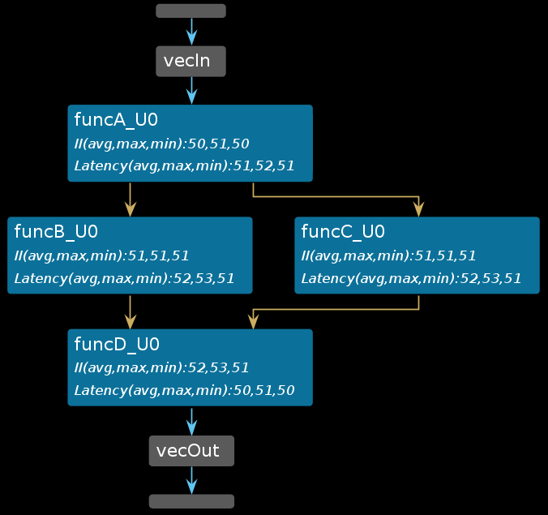
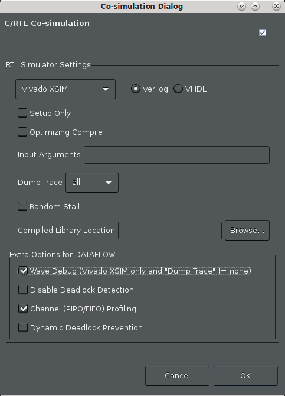

2021.1 Vitis™ アプリケーション アクセラレーション チュートリアル2021.1 Vitis アプリケーション アクセラレーション開発フロー チュートリアル |
Vitis HLS の解析および最適化 |
1.データフロー ビューアーの基礎¶
DATAFLOW 最適化では、ループ レベルの並列処理に加え、コード内のさまざまな関数間にタスク レベルの並列処理が可能な限り作成されます。最適化には 2 つの段階があります。1 つ目の段階では、コンパイラが並列タスクを推論し、通信チャネルと関連する制御を設定します。2 つ目の段階では、生成された RTL デザインがシミュレーションされた後、DATAFLOW 最適化のパフォーマンスを解析できます。そのため、ツールで推論されたデータフロー構造を表示する [Dataflow] ビューが提供されており、チャネル (FIFO/PIPO) を調べて、チャネルの深さのパフォーマンスへの影響を確認できます。この後、協調シミュレーションの結果からのパフォーマンス データが、[Dataflow] ビューにバックアノテートされます。[Dataflow] ビューには、さまざまなプロセスとその基になるプロデューサーとコンシューマー関係を示すデータフロー構造もグラフで表示されます。
ヒント: [Dataflow] ビューにデータフロー構造が表示されるようにするには、デザインに DATAFLOW プラグマまたは指示子を適用する必要があります。データフローは、最上位関数に適用するか、関数またはループの領域を指定できます。詳細は、『Vitis 統合ソフトウェア プラットフォームの資料』 (UG1416) の Vitis HLS フローの set_directive_dataflow を参照してください。
ツアー¶
このチュートリアルの最初の演習では、デザイン例を合成し、データフロー ビューアーを起動して、ビューアーの機能を紹介します。reference-files/dataflow フォルダーに含まれる単純なデータフロー例を見てみます。
この演習では、次を実行します。
指定したデータフロー領域のデータフロー ビューアーを起動する方法について説明します。
データフロー ビューアーのさまざまな機能の使用方法を理解します (協調シミュレーションの前後両方で)。
演習 1¶
ディレクトリを
03-dataflow_debug_and_optimization/reference-files/dataflowディレクトリに変更し、次のコマンドで Vitis HLS GUI を起動します。
vitis_hls -p script.tcl Vitis HLS GUI が起動し、デザインの合成に必要なプロジェクトが作成されますが、GUI で script.tcl ファイルのコマンドの実行が突然停止します。
緑色の [Run] コマンド (
 ) をクリックして、デザインを合成します。
) をクリックして、デザインを合成します。
デザインが合成されたら、合成レポートが自動的に表示されます (次の図を参照)。

合成サマリ レポートの関数の横の [Dataflow] アイコン () は、データフロー ビューアー レポートもあることを示します。

最上位の関数名 () を右クリックし、[Open Dataflow Viewer] コマンドで関数の新しいデータフロー ビューアーを開きます。

上の図には、次のようなエリアがあります。
[Module Hierarchy] ビュー¶
1 つ目は、最上位の diamond 関数内の関数階層を示す [Module Hierarchy] ビューです。モジュール階層を表示するだけでなく、レイテンシ、II (開始間隔)、ロジック リソースの見積りなど、階層内の各サブ関数の詳細を調べることができます。
データフロー グラフ ビュー¶
2 つ目は、データフロー領域内の関数間の接続をグラフ形式で表示するデータフロー グラフ ビューです。データフロー領域のポートは、水平の灰色のバーで表されます (図の vecIn および vecOut ポートを参照)。
グラフ内のノード (青のボックスで表示) は、データフロー領域内の関数またはループを表します。これらの関数には、ユーザーが定義した関数だけでなく、コンパイラによって推論された関数が含まれている場合があります。これらの推論された関数には、通常 _proc という接尾語が含まれます。
グラフのエッジ (青、緑、または金色の矢印) は、関数間の通信を表します。
青いエッジ: 関数間のデータ依存関係
緑色のエッジ: 関数間で推論された FIFO チャネル
金色のエッジ: 推論された PIPO チャネル
データフロー グラフ ビューには、Zoom In/Out コマンド (スクロール マウス ボタンを使用して拡大/縮小可能)、Zoom Fit および Zoom Full コマンドなど、便利な機能がいくつかあり、ツールバー メニューにも表示されます。また、FIFO チャネルは、Group All および Ungroup All コマンドを使用して、PIPO チャネルとしてグループ化またはグループ解除された状態でグラフに表示できます。個々のチャネル グループは、+ または - コマンドを使用して展開またはグループ化できます。最後に、グラフで使用される色構文を表示する Legend コマンドがあります。
グラフ画面の右上の Filter アイコンを使用すると、ストリーム/タスク レベル/スカラー伝搬 FIFO、PIPO、ブロックのストリームなど、さまざまなチャネル サブタイプでフィルタリングできます。
データフロー プロパティの表¶
GUI の下部には、データフロー プロセス (または関数) およびデータフロー チャネルに関するさまざまな詳細を示すデータフロー プロパティの表があります。
データフロー グラフ ビューで各プロセス/関数をクリックすると、該当するプロセスがデータフロー プロパティの表でハイライトされます。
選択したプロセスを右クリックすると、このプロセスに関するほかの情報を表示したり、アクセス可能なほかのビューアーについて理解したりできます。
データフロー プロパティの表のテーブルの [Channel] タブに切り替えます。グラフ内の緑色と金色の矢印をクリックすると、該当するチャネルが [Channel] の表でハイライトされます。
データフロー最適化は、スタティック最適化であるパイプライン処理とは異なり、ダイナミック最適化であることを理解することが重要です。このため、コンパイラがデータフロー最適化がインプリメントされることを通知しますが、最適化の効果は RTL 協調シミュレーションを実行するまで確認できません。プロセスまたはチャネルの詳細は、RTL 協調シミュレーションでパフォーマンス データが生成されるまで、次の図のように N/A と表示されます。

ヒント: RTL 協調シミュレーションを実行する前にデータフロー ビューアーを開くことはできますが、読み出し/書き込みブロックの時間、協調シミュレーションの深さ、ストール時間などの重要なシミュレーション パフォーマンス詳細は表示されません。
RTL 協調シミュレーション後のデータフロー グラフの表示¶
合成後は、協調シミュレーションを実行する必要があります。詳細は、『Vitis 統合ソフトウェア プラットフォームの資料 』(UG1416) の Vitis HLS フローの Vitis HLS での C/RTL 協調シミュレーションを参照してください。
[Solution] → [Run C/RTL Co-Simulation] をクリックします。次の図のように、[Co-simulation Dialog] ダイアログ ボックスが表示されます。

[Channel (PIPO/FIFO) Profiling] をオンにします。
[OK] をクリックします。
協調シミュレーションが終了すると、テストベンチがパスしたかどうかを示す協調シミュレーション レポートが開きます。
データフロー解析では、テストベンチが合成済み関数を複数回呼び出して、複数のイテレーションからパフォーマンス データを取得し、FIFO をフラッシュします。パフォーマンスに関しては、1 つの関数呼び出しでレイテンシ、その関数への 2 つ以上の呼び出しで II (開始間隔) が計算されます。
協調シミュレーションが終了したら、画面の右上で [Analysis] を選択し、
Analysisパースペクティブに切り替えます。データフロー グラフ ビューが開いている場合、次の図に示すように、RTL 協調シミュレーションで生成されたパフォーマンス データを含めてレポートが更新 (またはバックアノテーション) されます。
ヒント: 開いていない場合は、[Module Hierarchy] ビューで最上位の
diamond関数を右クリックし、[Open Dataflow Viewer] を選択します。
C/RTL 協調シミュレーションを実行すると、グラフのパフォーマンス データが書き込まれ、グラフの下の [Process] および [Channel] の表にもデータが挿入されます (次の図を参照)。RTL 協調シミュレーションからのパフォーマンス データがない場合、グラフおよび表には値が存在しないことを示す「NA」と表示されます。詳細は、Vitis 統合ソフトウェア プラットフォームの資料 (UG1416) の Vitis HLS フローの [Dataflow] ビューを参照してください。

[Dataflow] の [Process] タブの表に特に注意してください。
Cosim Stalling Time列には、シミュレーション時間がこの特定のプロセス中に停止していた割合 (%) が示されます。またCosim Read Block TimeまたはCosim Write Block Timeは、プロセスのチャネルへの読み出しまたは書き込みがブロックされた時間の割合を示します。Cosim Stall No StartおよびCosim Stall No Continueは、それぞれフォワードおよびバック プレッシャーを示しています。フォワード プレッシャーとは、ブロック ハンドシェイク プロトコルによって別の実行反復を開始できないことを意味します。
バック プレッシャーとは、コンシューマー プロセスがこのプロセスで生成されたデータを処理しているが、次のデータ セットの準備ができていないことを意味します。
これらは、データフロー領域内の潜在的な問題を指摘する重要な指標であり、パフォーマンスの低下やデッドロックの原因となる可能性のある一般的なプロデューサー/コンシューマー レートの問題を示します。

同様に、[Channel] タブ (上図) では、各チャネルの読み出しブロックおよび書き込みブロックの時間も追跡されます (
Cosim Read Block TimeおよびCosim Write Block Timeで示されます)。チャネルの表には、シミュレーション中に達成された深さ (Depth)、チャネルのタイプ (Type)、および最大の深さ (Cosim Max Depth) もチャネル別に表示されます。通常、これらのデータ フィールドは FIFO チャネルに役立ちます。次のセクションでは、これらのフィールドを使用して FIFO 深さを正確にサイズ設定し、FIFO サイズが正しくないことによるデッドロックを解決する方法について詳しく説明します。また、[Process] および [Channel] タブの
Cosim Category列では、プロセスやチャネルが none、read_block、write_block、および read_block and write_block という 4 つのカテゴリに分類されます。
波形を使用したデータフロー パフォーマンスの表示¶
データフロー ビューアーには、データフロー最適化のスタティック ビューのみを表示できます。グラフには、データフロー領域を構造的に示したコールグラフが表示されます (次を参照)。このグラフで特定のパスの各関数の II およびレイテンシを観察することにより、デザインのスループットを把握できます。

データフロー領域内の関数がどのように並行で実行されるか、および関数の実行がどのように重複するかを確認することは困難です。この動的なタイムラインを視覚化するには、Vivado XSIM シミュレータと波形ビューアーを使用します。
シミュレータ波形ビューアーを起動するには、いくつかの新しい設定で RTL 協調シミュレーションを再実行する必要があります。
[Solution] → [Run C/RTL Co-Simulation] をクリックします。
次の図のように、[Co-simulation Dialog] ダイアログ ボックスが表示されます。

次を選択します。
Vivado XSIM シミュレータが選択されていることを確認します。
[Dump Trace] オプションに [all] を選択して、すべてのポートおよび信号をトレースします。注記: これは小さなデザインなので、すべての信号をダンプしてトレースできます。大規模なデザインでは、シミュレーションの実行時間が長くなり、大きな波形データベースが作成される場合があります。
[Wave Debug] オプションをオンにすると、シミュレーション中に XSIM 波形ビューアーがインタラクティブに起動します。
[Channel (PIPO/FIFO) Profiling] をオンにします。
[OK] をクリックします。
この時点で、Vitis HLS の GUI で RTL 協調シミュレーションが再実行されます。今度の違いは、シミュレーションで実行した場合は、(Wave Debug により) Vivado XSIM 波形ビューアーが表示され 、シミュレーション中に生成された波形を (Dump Trace オプションで) 調べることができる点です。次のような図が表示されます。

データフロー最適化がデータフロー領域内の関数を並列に実行する方法を簡単に説明するため、波形が解析されてプロセスの開始と停止が追跡され、このアクティビティの概要が波形ビューアーに表示されます。上の図では、次の詳細に注意してください。
デザインの最上位関数は
diamond関数です。波形ビューアーでは、これはAESL_inst_diamondと表示されます。Name列の最初の項目はHLS Process Summaryです。このセクションでは、diamond関数内のデータフロー領域のアクティビティ トレース (青緑色のバー) を示します。これは、AESL_inst_diamond_activityの下にあるアクティビティ トレースを複製したものです。HLS Process Summaryは波形ビューアーの 1 つのセクションにその関数のアクティビティ波形をまとめます。最初の行には、特定の時点 (1, 2, 3, 2, 1) で並行して実行されている diamond 関数のアクティブな反復回数のサマリが表示されます。このレベルを展開すると、関数 (
funcA, funcB, funcC, & funcD) のアクティブな呼び出しが表示されます。このテスト用に提供されるテストベンチでは、最上位関数diamondが 3 回呼び出されます。このため、各関数のアクティビティ トレースには、関数に対する 3 つの呼び出しのそれぞれが実行されたタイミングが表示されます。また、diamond関数の本体内で関数が実行される順序も表示されます。まず、funcAが開始され、次にfuncBとfuncCが並列に実行され、これらの関数が完了したら、funcDの実行が開始されます。実行内の小さなギャップ (黄色の楕円で示される) がある場合は、実行を停止し、より詳しく確認した方が良い可能性があります。このビューは、データフロー領域内の関数がパイプラインで実行されるところを示していますが、スタティック パイプラインではなく、ダイナミック パイプラインで実行されています。

AESL_inst_diamond_activityレベルを展開すると、より詳細なビューが表示され、最上位関数への 3 つの呼び出しがどのように実行されるか (#0, #1, #2) が表示されます。これらは緑色のバーで表示されます。反復回数は 0 から始まり、この特定のテストベンチの場合は 2 で終了します。各反復が完了するまでにかかる時間を比較したり、反復が時間内でどのように重複するかを確認したりすることもできます。このため、最上位関数への複数の呼び出しもダイナミックにパイプライン処理されます。各サブ関数のアクティビティ トレースを調べると、サブ関数の呼び出しがいつ開始および停止するかを確認できます (緑の #0, #1, #2 というバーで表示。青緑の (1, 1, 1) バーは指定した時点でのアクティブな反復を表示するのみ)。
StallNoContinue信号などの追加詳細が表示され、関数実行が停止する可能性のあるバック プレッシャーがハイライトされます。上の図では、funcDからのバック プレッシャーがfuncBとfuncCで確認できます (赤の楕円でさまざまなStallNoContinue波形上でハイライトされます)。RTL レベルの信号は、
RTL Signalsセクションを展開して調べることもできます。HLS データフローのこのデフォルト形式 (つまり、PIPO チャネルの場合のみ) では、カーネル実行での連続する通信タスクは重複しないことに注意してください。
funcBおよびfuncCはfuncA(ping または pong) からのバッファーが解放された後にのみ開始できます。funcBおよびfuncCは、データが生成される順序と同じ順序で消費される場合に、FIFO がピンポン バッファーへの代替チャネルとして使用されていれば、先に開始される可能性があります。通常、PIPO はデータがランダムな順序でバッファーに書き込まれるときに使用されます。このため、バッファーへのアクセスを解放する前に、すべての処理が完了するまで、バッファー全体がロックされます。FIFO は通常、データが作成された順序で消費されるストリーミング タイプのアプリケーションがある場合に使用されます。これにより、コンシューマーは FIFO にデータが入ってくるとすぐに処理を開始できます。
次の手順¶
FIFO のサイズ設定とデッドロック: GUI でデッドロック検出機能を使用する方法と、FIFO サイズを変更してデッドロックを回避し、パフォーマンスを向上させる方法を説明します。
Copyright© 2020-2021